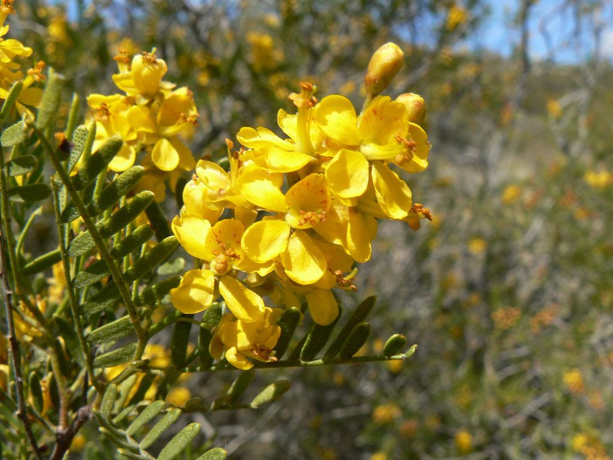
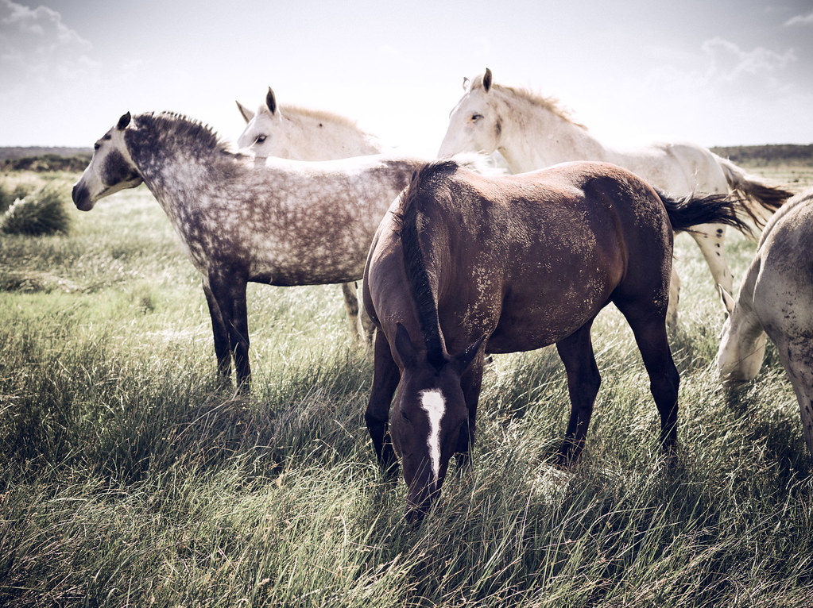

Sierras
Cascadas
Salto de la Moneda
Salto de la Moneda
El salto del Tigre
Agua cristalina
Espejos
Dique La Florida
Dique La Florida
La Toma

Embalse Nogolí

San Luis

Embalse La Florida
Salinas del Bebedero
Salinas del Bebedero
Salinas del Bebedero
Salinas del Bebedero
Salinas del Bebedero
Sierra de las Quijadas

Sierra de las Quijadas

Sierra de las Quijadas
Sierra de las Quijadas
Sierra de las Quijadas
Playa de Piscu Yaco

Piscu Yaco
Piscu Yaco
Arquitectura

Monasterio de las monjas Benedictinas

Monasterio de las monjas Benedictinas

Museo Minerológico La Carolina
La Carolina
La Carolina
La Carolina
Estadio La Pedrera
Flora y fauna

Flor de Retama
Árbol de Algarrobo

Flor de Tintitaco

Árbol de Quebracho
Fruto de Piquillín

Flor de Jarilla

Caballos salvajes
Caballos salvajes

Caballos salvajes

Jabalíes salvajes
Liebres

Puma andino
Tortuga de tierra
Zorro

Carancho
Halcón peregrino

Halcón peregrino

Cóndor andino

Cóndor andino
Cóndor andino
Comida típica